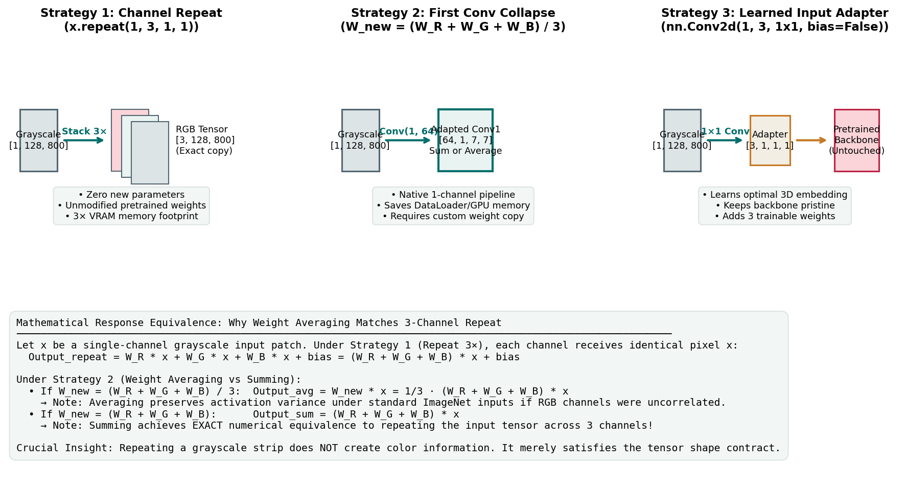

Adapting Pretrained RGB Backbones to Single-Channel Grayscale
When you initialize a computer vision backbone from an ImageNet checkpoint (such as a ResNet or an EfficientNet), the network arrives with an uncompromising architectural contract: it expects 3-channel RGB image tensors:
However, industrial surface anomaly inspection takes place under monochromatic illumination. High-speed industrial line-scan cameras capture intensity strips containing only 1 grayscale channel:
If you attempt to feed a 1-channel tensor directly into an off-the-shelf ImageNet backbone, PyTorch will halt with an immediate shape incompatibility error:
RuntimeError: Given groups=1, weight of size [64, 3, 7, 7], expected input[1, 1, 128, 800] to have 3 channels, but got 1 channels instead.How should you bridge this architectural mismatch? Repeating the channel? Modifying the first convolution layer? Or prepending a learned projection adapter?
This guide examines three defensible grayscale adaptation strategies, proves their mathematical relationships, analyzes their impact on GPU memory and normalization physics, and equips you to make a principled choice for your pipeline.
1. The Core Dilemma: Color Channels vs. Monochromatic Physics
Before examining code, consider what color channels mean to a convolutional neural network.
In natural image photography (ImageNet), red, green, and blue channels represent distinct spectral wavelengths:
- A ripe tomato has high red values and low green/blue values.
- The sky has high blue values and low red values.
- Pretrained first-layer filters (often \(7 \times 7\) kernels in ResNet or \(3 \times 3\) in EfficientNet) have learned color-opponent receptive fields (e.g., green-magenta or blue-yellow transitions) as well as achromatic luminance edge detectors.
In industrial steel manufacturing, there is no chromatic variation. The surface of a cold-rolled steel strip is entirely monochromatic:
- Rolling marks, scratches, scale inclusions, and oil spots are defined strictly by photometric intensity variations (darker or lighter shades of gray) and spatial micro-textures.
- Repeating a grayscale channel three times does not create color information. It simply feeds three identical copies of the monochromatic signal into the three RGB input sockets of the network.

Figure 3.1: The three architectural strategies for adapting a 3-channel pretrained backbone to single-channel industrial strips. Each strategy offers different trade-offs in GPU memory, parameter overhead, and implementation complexity.2. Strategy 1: Channel Duplication (\(1 \to 3\) Repeat)
The simplest and most common approach in competitive computer vision is channel duplication: replicating the single grayscale channel across all three input channels before passing it to the backbone.
Implementation Mechanics
In PyTorch, duplication is performed either in the DataLoader or at the start of the model's forward() method:
# In Dataset / DataLoader:
image_rgb = np.repeat(image_gray, 3, axis=0) # Shape: [3, 128, 800]
# Or inside PyTorch Model forward():
def forward(self, x_gray):
# x_gray shape: [B, 1, 128, 800]
x_rgb = x_gray.repeat(1, 3, 1, 1) # Shape: [B, 3, 128, 800]
return self.backbone(x_rgb)Mathematical Filter Response
Let \(x\) be a single-channel grayscale image patch. The first convolution layer possesses weights \(W \in \mathbb{R}^{C_{\text{out}} \times 3 \times K \times K}\) with filter slices \(W_{\text{R}}, W_{\text{G}}, W_{\text{B}}\) and bias \(b \in \mathbb{R}^{C_{\text{out}}}\).
When the duplicated input is convolved with filter \(W\):
Each output feature cell simply computes the sum of the three color filter slices convolved with the grayscale patch!
Trade-Offs
- Advantages:
- Zero parameter changes: The pretrained backbone is preserved in its exact original state.
- Zero weight modification bugs: Pretrained weights load seamlessly without custom checkpoint manipulation.
- Disadvantages:
- Memory Overhead: Input tensors occupy \(3\times\) the memory in RAM, DataLoader inter-process communication (IPC), and GPU VRAM before the first layer.
- Compute Inefficiency: The first convolutional layer executes \(3\times\) more multiplication and addition operations than strictly necessary.
3. Strategy 2: First-Layer Convolution Modification (\(3 \to 1\) Weight Collapse)
Instead of inflating the input data to fit the model, Strategy 2 modifies the model's first convolutional layer to fit the data.
We replace the initial 3-channel convolution with a 1-channel convolution:
The challenge is: how should the new 1-channel weights \(W_{\text{new}} \in \mathbb{R}^{64 \times 1 \times 7 \times 7}\) be initialized from the pretrained RGB weights \(W_{\text{orig}} \in \mathbb{R}^{64 \times 3 \times 7 \times 7}\)?
Two primary mathematical formulations exist:
A. Weight Summing (\(W_{\text{new}} = W_{\text{R}} + W_{\text{G}} + W_{\text{B}}\))
-
Mathematical Property: As proven in Section 2, summing the three filter slices produces the exact same numerical activation output as repeating the input across three channels:
\[\text{Output}_{\text{sum}} = \left( \sum_{j} W_j \right) * x + b \equiv W_{\text{orig}} * [x, x, x]^T + b\] -
This guarantees \(100\%\) mathematical equivalence to Strategy 1 without storing or transferring 3-channel tensors!
B. Weight Averaging (\(W_{\text{new}} = \frac{1}{3} (W_{\text{R}} + W_{\text{G}} + W_{\text{B}})\))
- Mathematical Property: Averaging divides the sum by 3.
- Why do some engineers prefer averaging? In natural RGB images, the red, green, and blue channels have variance \(\sigma^2\) but are not perfectly correlated. In grayscale duplication, all three channels have correlation \(r = 1.0\). If a filter was trained assuming uncorrelated inputs, summing can increase the variance of the first-layer activations by up to \(3\times\). Averaging dampens the activation magnitude, keeping the activation distribution closer to standard variance.
- Note: Subsequent Batch Normalization layers will automatically rescale and re-center activations during training, diminishing this difference after a few training epochs.
Implementation Code Pattern
import torch
import torch.nn as nn
def adapt_conv1_to_grayscale(conv1_rgb: nn.Conv2d, mode: str = "sum") -> nn.Conv2d:
"""Adapts a pretrained 3-channel Conv2d layer to accept 1-channel grayscale inputs."""
out_channels = conv1_rgb.out_channels
kernel_size = conv1_rgb.kernel_size
stride = conv1_rgb.stride
padding = conv1_rgb.padding
bias = conv1_rgb.bias is not None
# Instantiate new 1-channel Conv2d
conv1_gray = nn.Conv2d(
in_channels=1,
out_channels=out_channels,
kernel_size=kernel_size,
stride=stride,
padding=padding,
bias=bias,
)
with torch.no_grad():
w_rgb = conv1_rgb.weight.data # Shape: [out_ch, 3, k, k]
if mode == "sum":
conv1_gray.weight.data = w_rgb.sum(dim=1, keepdim=True)
elif mode == "average":
conv1_gray.weight.data = w_rgb.mean(dim=1, keepdim=True)
else:
raise ValueError(f"Unknown mode: {mode}")
if bias:
conv1_gray.bias.data = conv1_rgb.bias.data.clone()
return conv1_grayTrade-Offs
- Advantages:
- Memory and Compute Optimal: The entire pipeline operates on native \([B, 1, 128, 800]\) tensors.
- No Data Duplication: Saves bandwidth in CPU-to-GPU memory copies and DataLoader workers.
- Disadvantages:
- State Dict Incompatibility: The model's state dictionary key
conv1.weightnow has shape[64, 1, 7, 7]instead of[64, 3, 7, 7]. If you attempt to load a raw ImageNet checkpoint without adapting the keys, PyTorch will raise asize mismatchexception.
- State Dict Incompatibility: The model's state dictionary key
3. Strategy 3: Learned \(1 \to 3\) Input Adapter
A third defensible architecture is to insert a small learned projection layer immediately before the pretrained backbone:
Strategy 3 Architecture:
Grayscale Input [B, 1, 128, 800] ──► [Adapter: 1×1 Conv (1 -> 3)] ──► RGB Tensor [B, 3, 128, 800] ──► Pretrained BackboneImplementation Mechanics
class GrayscaleAdapterModel(nn.Module):
def __init__(self, pretrained_backbone):
super().__init__()
# 1x1 convolution mapping 1 channel to 3 channels without bias
self.adapter = nn.Conv2d(in_channels=1, out_channels=3, kernel_size=1, bias=False)
# Initialize adapter weights to 1.0 (equivalent to 3x repeat)
nn.init.constant_(self.adapter.weight, 1.0)
self.backbone = pretrained_backbone
def forward(self, x_gray):
x_adapted = self.adapter(x_gray) # Learns optimal linear projection to RGB space
return self.backbone(x_adapted)Mathematical Interpretation
The adapter learns three scalar weights: \(w_{\text{R}}, w_{\text{G}}, w_{\text{B}}\). During forward propagation:
Instead of forcing the network to treat red, green, and blue equally, the optimizer can learn to weight the three channels differently, allowing the backbone to favor whichever color filter pathways are most sensitive to surface texture anomalies.
Trade-Offs
- Advantages:
- Keeps the pretrained backbone completely pristine and unmodified.
- Adds only 3 trainable parameters (\(3 \times 1 \times 1 \times 1 = 3\) weights).
- Disadvantages:
- Still produces an intermediate 3-channel feature map in GPU memory.
4. Normalization Physics: ImageNet Statistics vs. Local Z-Score
Regardless of which adaptation strategy you choose, you must address input normalization.
Vision backbones expect inputs normalized according to the channel statistics of ImageNet:
The Single-Channel Normalization Question
If you duplicate a grayscale image \(x \in [0, 1]\) into three channels and apply ImageNet normalization:
Notice a subtle phenomenon: the three channels are no longer identical! Because the ImageNet channel means and standard deviations differ slightly across R, G, and B, applying ImageNet normalization transforms identical grayscale pixels into three slightly shifted channels:
- Channel 0 (Red) receives an offset of \(-0.485 / 0.229 = -2.118\).
- Channel 1 (Green) receives an offset of \(-0.456 / 0.224 = -2.036\).
- Channel 2 (Blue) receives an offset of \(-0.406 / 0.225 = -1.804\).
What If You Use Local Dataset Z-Score Normalization?
Many segmentation practitioners normalize each image individually using its own sample statistics:
- Advantage: Eliminates camera lighting drift and exposure differences between different inspection cameras.
- Pretrained Caution: The resulting values have mean 0.0 and variance 1.0. This does not match ImageNet's normalized distribution. If you use local z-scores, you must allow the first layer (or the input adapter) to fine-tune so the network can adjust its bias terms to accommodate the shifted mean.
5. Comparative Decision Matrix
| Dimension | Strategy 1: Repeat (3×) | Strategy 2: First Conv Collapse | Strategy 3: Learned Adapter |
|---|---|---|---|
| New Parameters | \(0\) | \(0\) (weights replaced) | \(3\) weights |
| Input Tensor Shape | \([B, 3, 128, 800]\) | \([B, 1, 128, 800]\) | \([B, 1, 128, 800]\) |
| RAM / DataLoader Memory | High (\(3\times\) volume) | Minimal (\(1\times\) native) | Minimal (\(1\times\) native) |
| First-Layer FLOPs | \(3\times\) | \(1\times\) (Lowest) | \(1\times\) conv + adapter overhead |
| State Dict Checkpoint Loading | Seamless | Requires manual weight remap | Seamless |
| Mathematical Parity | Baseline reference | Exact match (with Sum) | Flexible generalization |
| Recommended Use Case | Fast experimentation | Production / Resource efficiency | Systematic ablation studies |
6. Common Implementation Pitfalls and Diagnostics
| Bug / Pitfall | Root Cause | Observable Symptom | Diagnostic & Fix |
|---|---|---|---|
| Random Re-Initialization of Conv1 | Replacing conv1 with nn.Conv2d(1, 64, ...) without copying pretrained weights. |
Model trains significantly slower; early validation Dice is much lower than Strategy 1. | Verify that conv1.weight is populated using w_rgb.sum(dim=1) or w_rgb.mean(dim=1). |
| Channel Axis Mismatch in Repeat | Using x.repeat(3, 1, 1, 1) instead of x.repeat(1, 3, 1, 1). |
Batch size becomes \(3B\), causing immediate batch dimension errors. | Assert x_rep.shape == (B, 3, H, W) after duplication. |
| State Dict Key Collision on Resume | Loading an unmodified 3-channel checkpoint into an adapted 1-channel model. | RuntimeError: Error(s) in loading state_dict: size mismatch for conv1.weight. |
Strip conv1.weight from checkpoint or adapt checkpoint weights prior to loading. |
| Scale Shock from Zero Initialization | Initializing learned adapter weights to zero (nn.init.zeros_). |
Gradients vanish on forward pass 1; initial loss is completely flat. | Initialize adapter weights to 1.0 or 1/3. |
7. Ungraded Try-It Activity: Verify Activation Equivalence by Hand
Work through this small numerical calculation to confirm why weight summing matches channel repetition:
Suppose you have a tiny \(1 \times 1\) image patch where the grayscale pixel value is \(x = 2.0\). A 3-channel convolution has three weights and a bias:
-
Calculate the output using Strategy 1 (Repeat 3×):
\[x_{\text{in}} = [2.0, 2.0, 2.0]^T\]\[\text{Output}_1 = W_{\text{R}} \cdot x_{\text{in}}[0] + W_{\text{G}} \cdot x_{\text{in}}[1] + W_{\text{B}} \cdot x_{\text{in}}[2] + b\] -
Calculate the adapted weight \(W_{\text{new}}\) using Strategy 2 (Summing):
\[W_{\text{new}} = W_{\text{R}} + W_{\text{G}} + W_{\text{B}}\]\[\text{Output}_2 = W_{\text{new}} \cdot x + b\] -
Do the two outputs match?
- What would the output be under Strategy 2 (Averaging)? How does it differ?
Click here to view the worked solution
-
Strategy 1 (Repeat 3×):
\[\text{Output}_1 = 0.5(2.0) + (-0.2)(2.0) + 0.8(2.0) + 0.1 = 1.0 - 0.4 + 1.6 + 0.1 = 2.30\] -
Strategy 2 (Summing):
\[W_{\text{new}} = 0.5 + (-0.2) + 0.8 = 1.10\]\[\text{Output}_2 = 1.10(2.0) + 0.1 = 2.20 + 0.1 = 2.30\]\[\text{Output}_1 \equiv \text{Output}_2 \text{ (Exact Equality!)}\] -
Matching Confirmation: Yes, they match identically down to the last decimal place (\(2.30\)).
-
Strategy 2 (Averaging):
\[W_{\text{avg}} = \frac{1.10}{3} \approx 0.3667\]\[\text{Output}_{\text{avg}} = 0.3667(2.0) + 0.1 = 0.7333 + 0.1 = 0.8333\]Notice that the activation magnitude before bias is scaled down by exactly a factor of 3 (\(2.20 / 3 = 0.7333\)).
To verify all three strategies numerically on synthetic tensors using PyTorch on CPU, run:
👉 docs/milestone_3_student_guide/examples/toy_grayscale_adaptation.py
8. Primary Sources & Further Reading
- PyTorch Documentation:
torch.nn.Conv2d. Official reference for convolution layer weights and parameter specifications. PyTorch Docs. - Ioffe, S., & Szegedy, C. (2015). Batch Normalization: Accelerating Deep Network Training by Reducing Internal Covariate Shift. ICML. arXiv:1502.03167. Details running statistics and scaling behavior in convolutional layers.
- Segmentation Models PyTorch (SMP). Documentation on backbone channel customization and input channel configuration (
in_channels=1). SMP Docs.